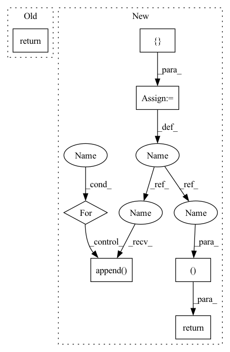

Pattern ID :1839
Before Change
scores, feats = self.mpd(x)
score_sd, feats_sd = self.sd(x)
return scores + [score_sd], feats + [feats_sd]
After Change
x_scores = []
x_hat_scores = [] if x_hat is not None else None
x_feats = []
x_hat_feats = [] if x_hat is not None else None
for net in self.nets:
x_score, x_feat = net(x)
x_scores.append(x_score)
x_feats.append( x_feat)
if x_hat is not None:
x_hat_score, x_hat_feat = net(x_hat)
x_hat_scores.append(x_hat_score)
x_hat_feats.append(x_hat_feat)
return x_scores, x_feats, x_hat_scores, x_hat_feats
In pattern: SUPERPATTERN
Frequency: 4
Non-data size: 7
Instances Fragment ID: 7167759
Project Name: coqui-ai/tts
Commit Name: 49e1181ea40ee95df29250120d2e343712a70793
Time: 2021-08-26
Author: egolge@coqui.ai
File Name: TTS/tts/layers/vits/discriminator.py
M Class Name: VitsDiscriminator
N Class Name: VitsDiscriminator
M Method Name: forward(3)
N Method Name: forward(2)
M Parent Class: nn.Module
N Parent Class: nn.Module
M File Name: TTS/tts/layers/vits/discriminator.py
N File Name: TTS/tts/layers/vits/discriminator.py
M Start Line: 75
M End Line: 77
N Start Line: 69
N End Line: 91
Before Change
c = c.view(c.size(0), c.size(1), 1, 1)
c = c.repeat(1, 1, x.size(2), x.size(3))
x = torch.cat([x, c], dim=1)
return self.main(x)
class Discriminator(nn.Module):After Change
c = c.repeat(1, 1, x.size(2), x.size(3))
x = torch.cat([x, c], dim=1)
feature_maps = []
// Get intermediate feature maps
for layer in self.main:
x = layer(x)
feature_maps.append( x)
return x, feature_maps
class Discriminator(nn.Module):
Discriminator network with PatchGAN. Fragment ID: 7167761
Project Name: natanielruiz/disrupting-deepfakes
Commit Name: 65fa72e564614a020aeb9b1ec76afddb8bd8e402
Time: 2019-12-23
Author: nruiz@Nataniels-MacBook-Pro.local
File Name: stargan/model.py
M Class Name: Generator
N Class Name: Generator
M Method Name: forward(3)
N Method Name: forward(3)
M Parent Class: nn.Module
N Parent Class: nn.Module
M File Name: stargan/model.py
N File Name: stargan/model.py
M Start Line: 63
M End Line: 64
N Start Line: 63
N End Line: 72
Before Change
out = self.tanh(self.conv7(torch.cat((out6, out1), 1)))
return out
After Change
alpha_stacked = self.tanh(self.conv7(torch.cat((out6, out1), 1)))
alphas = torch.split(alpha_stacked, 3, 1)
results = [ xfor i in range(self.n):
// x = x + alphas[i] * (x - x**2) // as described in the paper
// sign doesn"t really matter becaus of symmetry.
x = x + alphas[i] * (torch.pow(x, 2) - x)
if i + 1 in self.ret:
results.append( x)
return results, alpha_stacked
Fragment ID: 7167760
Project Name: bsun0802/zero-dce
Commit Name: 62f6f08b3141a697519bc2d480b342d19f21cf3e
Time: 2020-07-23
Author: bos@usc.edu
File Name: code/model.py
M Class Name: DCENet
N Class Name: DCENet
M Method Name: forward(2)
N Method Name: forward(2)
M Parent Class: nn.Module
N Parent Class: nn.Module
M File Name: code/model.py
N File Name: code/model.py
M Start Line: 47
M End Line: 49
N Start Line: 40
N End Line: 51
Before Change
super().__init__()
def forward(self, x):
return x
class Teacher(nn.Module):
def __init__(After Change
gru_input = torch.cat((proprio, latent_extero), dim = -1)
next_hiddens = []
for gru_cell, prev_hidden in zip(self.gru_cells, hiddens):
gru_input = gru_cell(gru_input, prev_hidden)
next_hiddens.append( gru_input)
gru_output = gru_input
// attention gating of exteroception
attention_gate = self.to_extero_attn_gate(gru_output)
gated_extero = latent_extero * attention_gate.sigmoid()
// belief state and add gated exteroception
belief_state = self.belief_state_encoder(gru_output)
belief_state = sum_with_zeropad(belief_state, gated_extero)
// to action logits
action_logits = self.to_action_logits(belief_state)
return action_logits, next_hiddens
class Teacher(nn.Module):
def __init__(
self, Fragment ID: 7167763
Project Name: lucidrains/anymal-belief-state-encoder-decoder-pytorch
Commit Name: 31d37d8d81db1d32cbfae83f1e43a669e4c8d5ea
Time: 2022-04-17
Author: lucidrains@gmail.com
File Name: anymal_belief_state_encoder_decoder_pytorch/networks.py
M Class Name: Student
N Class Name: Student
M Method Name: forward(4)
N Method Name: forward(2)
M Parent Class: nn.Module
N Parent Class: nn.Module
M File Name: anymal_belief_state_encoder_decoder_pytorch/networks.py
N File Name: anymal_belief_state_encoder_decoder_pytorch/networks.py
M Start Line: 74
M End Line: 75
N Start Line: 119
N End Line: 157